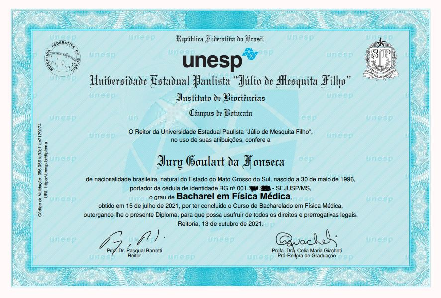

"Eu não nasci para programar?"

"Eu não nasci para programar?"
Eu queria comentar um pouco aqui da minha história na universidade. Eu fiz um curso que é interdisciplinar, porém ele é fundamentado com base na área de exatas, desde sempre eu tive facilidade em utilizar números e tecnologia. Entrei nesse curso e tinham algumas matérias de exatas que eu sempre odiei, não conseguia entender nada o que a professora explicava e por vezes eu até pensava que eu não tinha nascido para estudar aquilo, algumas dessas matérias eram: programação, cálculo numérico e álgebra linear. (basicamente tudo que envolve a área de ciência de dados rsrsrs).
Mesmo com dificuldade nessas matérias eu consegui terminar a graduação.
Quando eu terminei minha graduação eu ficava pensando: "Mas não é possível que eu sou tão ruim nessas matérias, o que ta faltando pra eu aprender isso direito?" e fiquei com aquilo na cabeça, resolvi então ir atrás de outros cursos, justamente dessas coisas que eu era ruim, programação, álgebra linear e cálculo numérico.
Tive algumas influências dos meus amigos a ir para o lado da ciência de dados, comecei a fazer o teste gratuito de alguns cursos para ver se eu me adaptava com a pedagogia daquele curso, até que eu finalmente encontrei um curso que eu comecei a entender e aprender (e é em inglês o curso), comecei a me desenvolver no mundo da programação em python e ciência de dados, me apaixonei pela área de uma forma inacreditável (talvez pela minha curiosidade em saber oque aqueles simples dados poderiam me informar com a análise certa) e até nos momentos de descanso de estudo eu começava a pesquisar algumas outras aplicações para machine learning, deep learning.
Então o que eu pude tirar de aprendizado disso tudo?
As vezes não é que vc não nasceu para fazer aquilo, talvez seja apenas o método pedagógico empregado por aquele professor ou curso, que vc não se adaptou direito (de vez em quando o professor é ruim mesmo, não da pra defender). É só vc buscar novos metodologias de ensino que vc vai conseguir aprender, se vc quiser bastante. Talvez vc até se apaixone por esta coisa nova que vc está aprendendo, assim como aconteceu cmg.